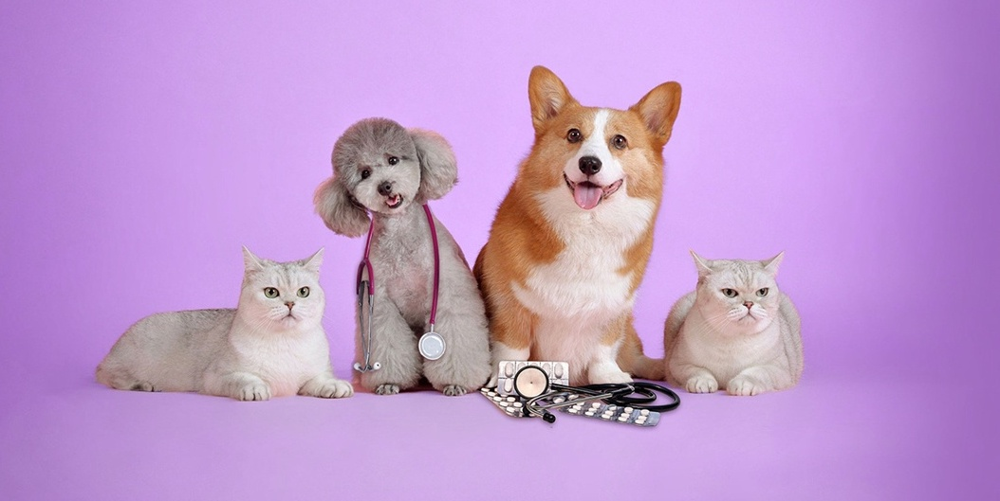
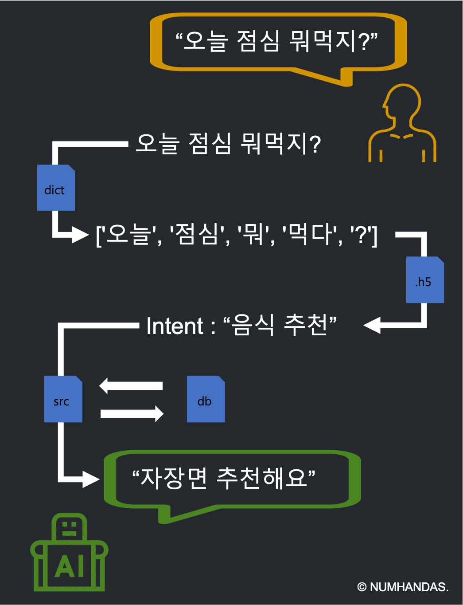
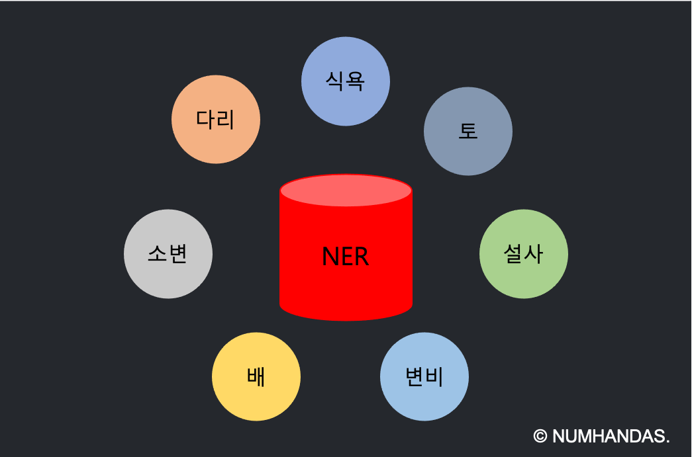
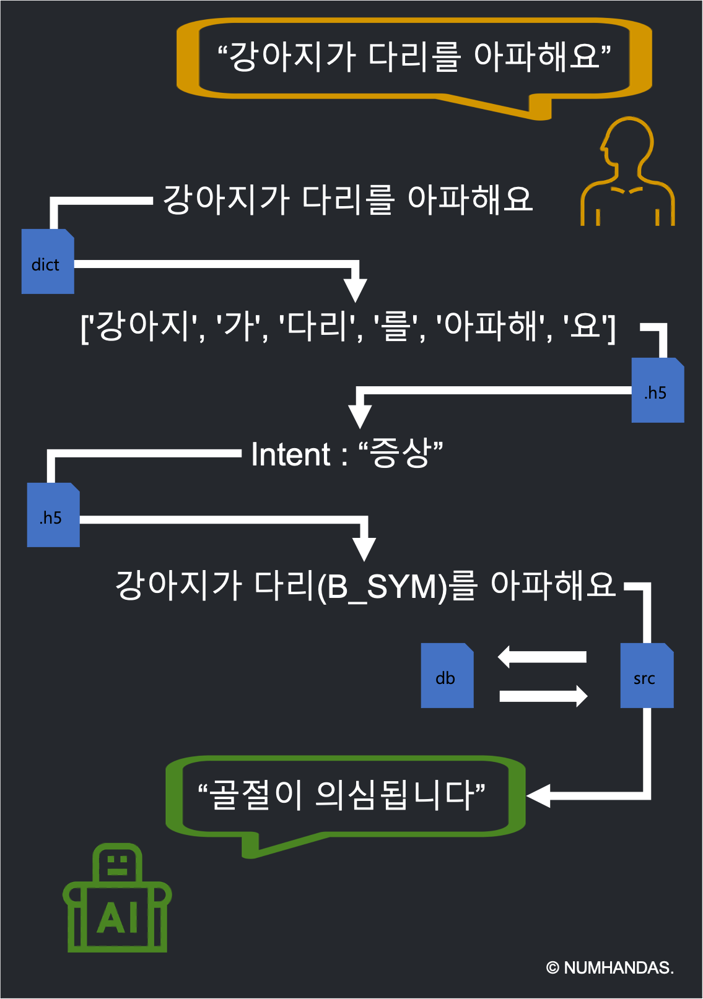

Intro

개요
반려동물의 인식은 해마다 개선되는 방향으로 변화하고 있다. 몇년 전까지만 해도 '주인이 기른다'라는 뜻으로 동물들을 '애완동물'이라고 칭했지만, 그 후 ‘인간과 애완동물의 관계’는 애완동물의 가치를 재인식하자는 의미에서 ‘반려동물’이라는 명칭이 제안되었다. 그리고 이제는 반려동물을 가족으로 받아들이자는 의미에서 ‘펫팸족’(Pet+Family)이라는 단어가 만들어졌다.
목적
반려동믈을 기르는 가정이 많아지면서 동물병원 또한 많이 설립되었다. 동물병원뿐만 아니라 국내 첫 동물 응급센터가 개설되기도 했다. 하지만 반려동물은 사람과 다르기 때문에 응급상황이 발생했을 때 바로 병원을 가야하는건지, 다른 응급처지가 있는건지에 대한 기준이 모호하다. 이러한 모호함을 잡아주거나 대비, 해결시켜주는 목적으로 이번 프로젝트의 주제를 반려동물 챗봇 케어 서비스로 잡아보았다.
방식
사용자의 질문을 입력받아 의도(Intent)를 찾아내고, 규칙기반과 인공신경망기반을 혼용하여 사용자에게 알맞은 답변을 한다.
Rule
규칙 기반 챗봇
규칙 기반 챗봇은 사용자가 질문한 문장의 형태소 분석과 키워드 검색을 통해 질문자의 의도(Intent)를 찾아내고, 해당 의도에 대해 미리 정의해 둔 답변 문장을 출력한다.

규칙 기반 챗봇은 주로 정형화된 업무에서 자주 하는 질문이나 업무 처리 프로세스에 대한 대응을 위해 사용된다. 또 예약 프로세스 처리를 위해 마음에 드는 방을 선택하고, 투숙자 이름과 날짜, 인원을 입력해서 결제에 이르는 일련의 업무 처리 절차도 챗봇으로 처리할 수 있다.
최근에는 과거의 단순 키워드 검색 기술 외에도 코사인 유사도 같은 유사 질의 판단을 위한 인공지능 알고리즘이 포함되는 하이브리드 형태로 구현하기도 한다. 이 방식은 신뢰도가 높고 의사 결정의 과정이 설명 가능하다는 장점이 있으나, 규칙을 작성한 사람의 능력에 의해 챗봇의 지능이 좌우된다는 단점이 있다.
규칙 기반의 챗봇이 적합한 분야는 순차적이며 절차적인 Q&A 처리 분야, 신뢰성이 중요한 업무 프로세스 처리 분야가 있다. 가장 큰 장벽은 규칙을 작성하는 사람이 해당 분야의 전문 지식을 가져야 한다는 것이다.

의도
현재 챗봇 모델이 인식할 수 있는 의도(Intent)의 종류는 '인사', '욕설', '질병', '품종', '수술', '증상', '기타'로 총 7개의 의도를 파악할 수 있다.
답변 방식
7가지의 의도 중 한가지의 의도를 파악 후 'Numhandas'만의 처리 방식으로 전처리 되어진 데이터를 비교 추출하여 사용자에게 답변한다.
AI
인공신경망 기반 챗봇
인공신경망 기반 챗봇은 수많은 뉴런의 연결 구조와 강도로 표현되는 인간의 두뇌를 모방(인공신경망)한 딥러닝 알고리즘을 이용한다. 대규모의 자료를 통해 ‘컴퓨터가 스스로’ 공통적인 특징을 추출한다고 해서 자율 학습 방식이라고도 불린다.
이 방식은 사람이 개입하는 규칙의 작성은 최소로 제한하고, 목적에 맞는 대량의 대화 데이터의 학습을 통해 질문을 인식하고 답변을 추출한다. 일일이 규칙을 작성하지 않고 스스로 학습이 가능하여 넓은 지식 범위를 수용할 수 있다는 장점이 있으나, 확률, 통계, 벡터 등의 수학 등 매우 방대한 데이터가 필요하고 대규모 GPU 서버 클러스터와 같은 강력한 컴퓨팅 파워가 요구된다는 단점이 있다.
인공신경망 기반 챗봇은 사진과 음성인식, 폭넓은 상담과 같이 규칙으로 표현하기 어려운 분야에 적합하다. 규칙 기반 챗봇과 비교했을 때, 가장 큰 장벽은 인공지능 알고리즘에 대한 기술적 이해가 필요하고 양질의 대규모 데이터를 확보해야 한다는 점이다.

개체명
개체명 태그는 'B_SYM'이 있고 요소는 '식욕', '토', '설사', '변비', '배', '소변', '다리'등이 있다.

답변 방식
CNN 모델을 통해 사용자의 질문 의도를 파악 후 Bi-LSTM 모델을 통해 개체명을 인식한다. 마지막으로 'Numhandas'만의 처리 방식으로 전처리 되어진 데이터를 비교 추출하여 사용자에게 답변한다.